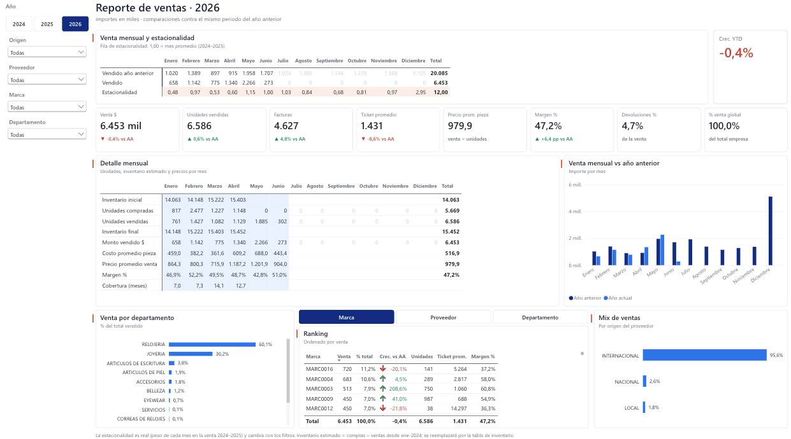
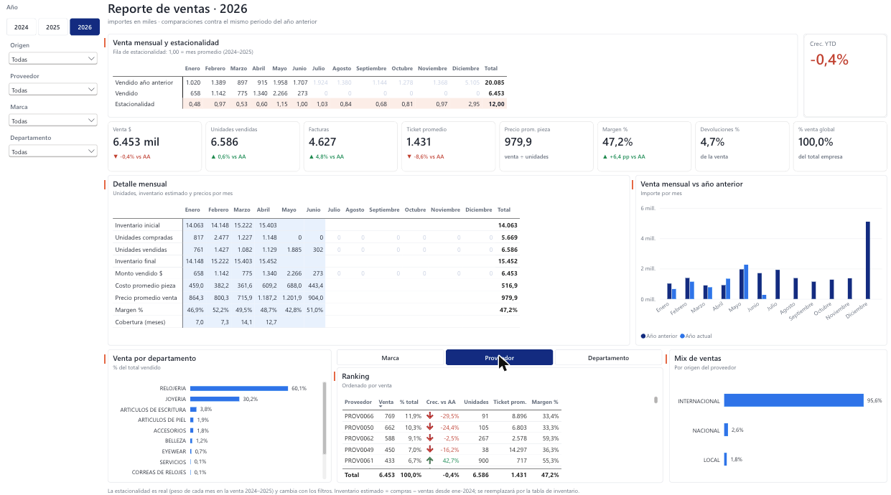
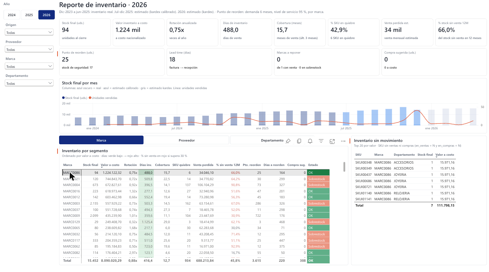
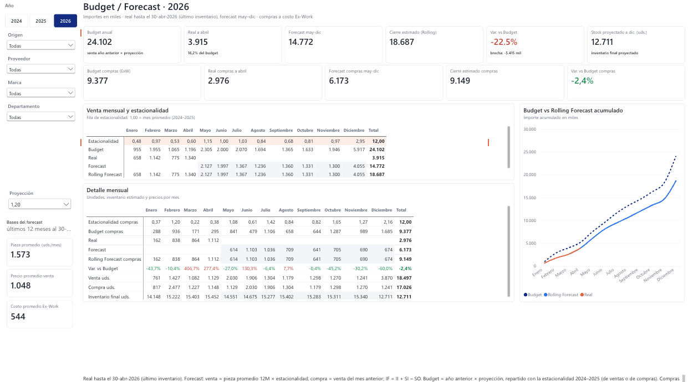
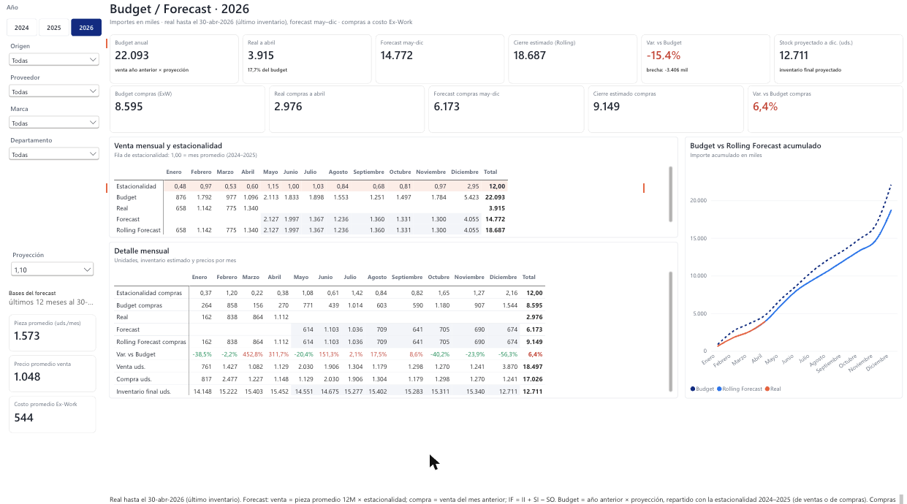
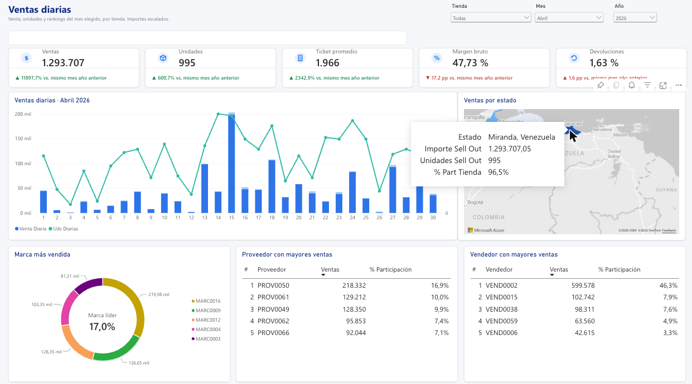

EL PROBLEMA
Compras y ventas se miraban por separado y faltaban meses de inventario. No se sabía qué marcas reponer ni cuáles frenar.
LO QUE HICE
Limpié y anonimicé los datos, reconstruí el inventario faltante, armé un modelo estrella y calculé punto de reorden, presupuesto y pronóstico.
CÓMO LO COMPROBÉ
68 controles de calidad, 12 pruebas automáticas y un backtest que mide el pronóstico contra lo que pasó de verdad.
Recorrido del informe
Un minuto por las 6 páginas: Resumen anual, Ventas, Compras, Inventario, Budget / Forecast y Ventas diarias.
El informe, página por página
Capturas del informe publicado en Power BI Service. Toca una para verla en grande.








Hallazgos
Cada cifra se recalcula con un script del repositorio. Las causas se validaron con el negocio.
Se compró más mientras se vendía menos
Compras de ene–abr 2026 a 4,5 veces las de 2025. Fue un desfase por una disrupción logística, no una sobrecompra.
Baja el ticket, no el volumen
El ticket promedio baja un 11 % por un cambio de mezcla hacia piezas de menor precio.
Casi la mitad del stock no rota
El 46 % de las unidades no tuvo ninguna venta en 12 meses.
Pocas marcas a reponer
7 marcas están bajo su punto de reorden, con una compra sugerida de 308 unidades.
¿Qué tan bueno es el pronóstico?
Lo probé ocultando may–dic 2025 y pronosticando con los datos hasta abril. El método del informe se equivoca menos que las dos alternativas simples, pero subestima cuando el negocio crece.
| Error (WAPE) | Unidades | Importe |
|---|---|---|
| Método del informe | 15,9 % | 30,0 % |
| Mismo mes del año anterior | 22,7 % | 34,7 % |
| Promedio plano | 29,3 % | 39,6 % |
Límites
- El pronóstico es fiable en total, no por marca: por marca y mes el error es de 65,6 %.
- El inventario de jul-2025 en adelante es estimado: el kardex puro lo subestima un 22 % a 6 meses.
- Los datos por sí solos no prueban causalidad; las causas se confirmaron con el negocio.